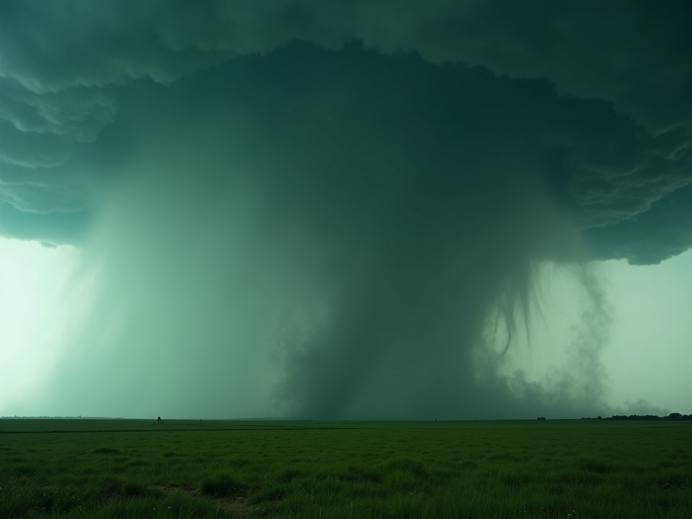
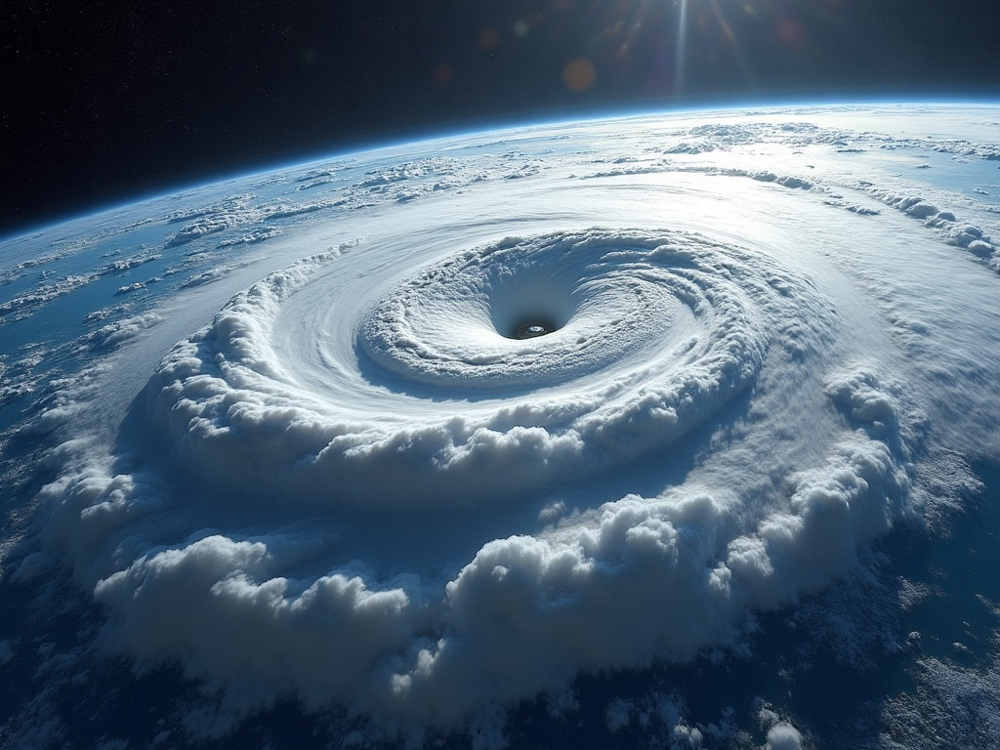
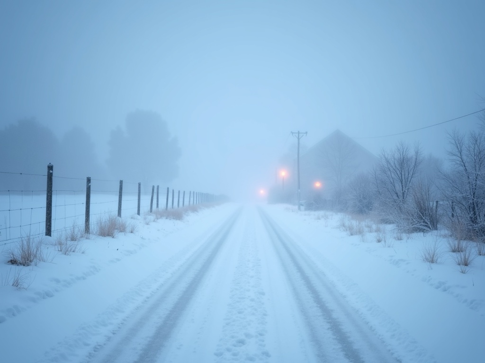
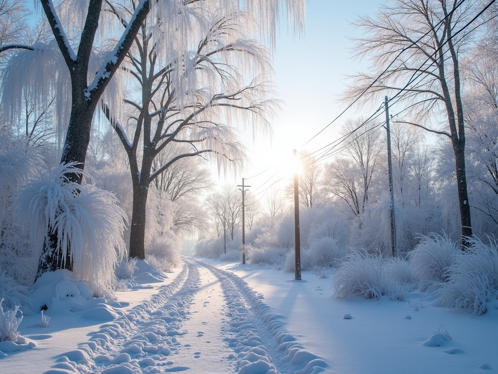
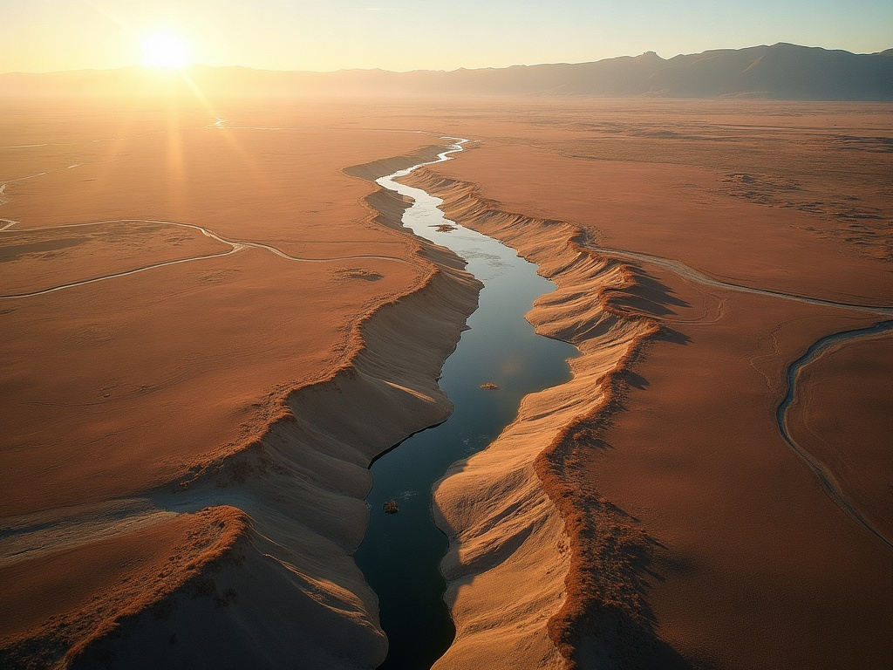
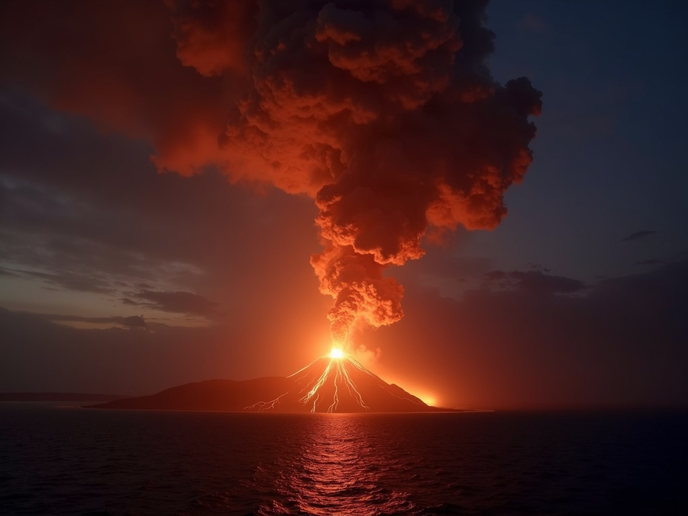
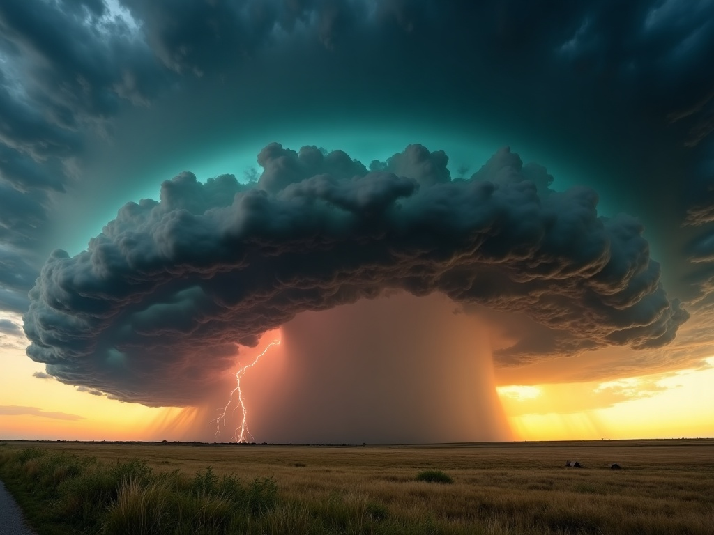

Homeschool science, grades 5–12
Full-year and semester meteorology and earth-science courses with documented lab hours, graded work, and a Completion Report ready for your transcript. Built and taught by Scott Withers — four-time Emmy-winning broadcast meteorologist, environmental geoscientist and author.
View Fall 2026 Courses Free: Read a Weather Map in 10 MinutesWhy EarthSphere
Colleges want to see lab science on a homeschool transcript. Most parents can't build that at the kitchen table — a working scientist can.
Not a video license, not a worksheet mill. The same scientist who forecasts on Miami television teaches every lesson — with on-air stories your student won't get anywhere else.
The flagship year includes 14 documented labs with report sheets and rubrics, 7 writing assignments, 2 cumulative exams, and a capstone: your student delivers an actual weathercast.
Syllabus, documented hours, grade weighting, and a fillable Completion Report — everything you need to award the credit with confidence, the way homeschool credit actually works.
What your student will study
Tornadoes, hurricanes, blizzards, ice storms, earthquakes, volcanoes — taught as real science by someone who covers them for a living.






How the credit works

Fall 2026 enrollment open — classes begin September 2
Enroll now for fall; early-bird pricing through July 31. Spring courses open for enrollment in January.
Included with every course — only here
A $29 value, included free — only with courses purchased at EarthSphereAcademy.com. Installs to any phone or tablet from the browser. No app store required.
📲 Get the App Now Enroll and get the appOne teacher, K–12
Younger kids start at Cane's Weather School (grades K–4). Families who complete the Cane's program receive a designated EarthSphere class free — same account, same login, kids' profiles intact.
Finished every Cane's class? Weather Detectives: Intro to Earth Science is already unlocked on your family account — Cane's graduation gift, on the house.
Free download
The exact map-reading method I teach on television — in a free illustrated guide your student can use today. Plus occasional course news for homeschool families. Unsubscribe anytime.